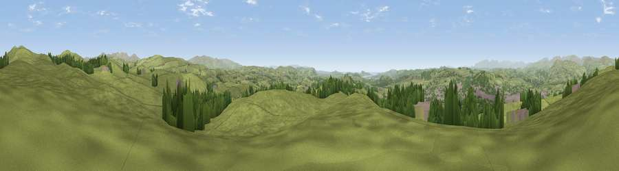

Viewpoint near Oxenholme
#8093 in England · top 32% of its area beats it · near OxenholmeWhere it is
The exact computed spot (SD 54375 92125). Click the marker for map links.
The view, rendered

A 360° render of this exact spot computed from the terrain model, tree cover and land cover — summer colours, afternoon light, calibrated against photographs of famous viewpoints. Real trees, hedges and buildings will differ in detail.
The panorama
Grey silhouette: terrain skyline in each direction (720 bearings, Earth curvature and refraction included). Dashed green: skyline with trees (+15 m) and buildings (+8 m) as obstacles. Blue strip: how far the ground is visible on each bearing.
Where the view opens
Wedge length = distance to the farthest visible ground on that bearing (vegetation-aware). Rings at 10, 25 and 50 km.
What fills the view
81% grassland · 13% woodland · 5% built-up ·
Angular shares of the visible panorama (visual magnitude), not map area. Landscape diversity 0.27 (0–1 Shannon).
Key numbers
More beautiful places nearby
The staircase of upgrades: each row has a higher view potential than everything closer. Driving times are estimates from straight-line distance, calibrated against real road routing — check an actual route before setting out.
| Place | Direction | Drive | Score |
|---|---|---|---|
| Viewpoint near Meal Bank | NNE · 2 km | ~5 min | 75.7 |
| Whinfell Beacon | NNE · 9 km | ~17 min | 77.0 |
| Castle Fell | NNE · 10 km | ~19 min | 77.2 |
| Viewpoint near Garnett Bridge | N · 12 km | ~22 min | 77.6 |
| Viewpoint near Lupton | S · 12 km | ~22 min | 78.7 |
| Fell Head | ENE · 12 km | ~23 min | 78.8 |
| Calders | ENE · 13 km | ~24 min | 79.0 |
| Calf Top | ESE · 14 km | ~25 min | 79.8 |
54.32265, -2.70296 · source: screening · position refined by local search. Computed location — check access rights before visiting.